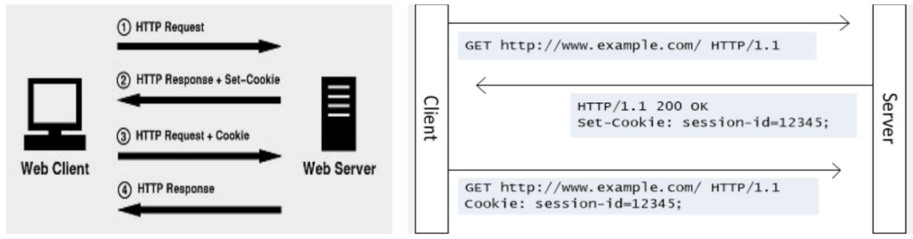

Internet (Интернет)
- Всемирная система объединённых компьютерных сетей для хранения, обработки и передачи информации.
- Сеть сетей, которая объединяет в себе компьютеры, маршрутизаторы и сервера.
- Очень большая сеть компьютеров, которые взаимодействую друг с другом.
- Интернет - это инфраструктура, а ВЭБ - это сервис, построенный на основе этой инфраструктуры.
Всемирная паутина (World Wide Web) — распределённая система, предоставляющая доступ к связанным между собой документам, расположенным на различных компьютерах, подключённых к сети Интернет.
Веб-служба, веб-сервис (web service) — идентифицируемая уникальным веб-адресом (URL-адресом) программная система со стандартизированными интерфейсами, а также HTML-документ сайта, отображаемый браузером пользователя.
Браузер
Браузер
Браузер - это программа, которая позволяет искать информацию в интернете, просматривать сайты, скачивать и загружать файлы.
- Это среднее звено между пользователем и интернетом.
- Пользователь вводит в адресную строку браузера адрес сайта.
- Браузер ищет сервер по IP-адресу. Сервер - это программа.
- Сначала он ищет в кэше роутера, операционной системе или в истории подключений.
- Потом смотрит в DNS.
- Найдя нужный IP-адрес, браузер устанавливает соединение с сервером с помощью протокола TCP/IP.
- Для установки соединения используется процесс 'рукопожатие' (handshaking).
- Браузер отправляет HTTP запрос на сервер для отображения страницы.
- Запрос обрабатывается вэб-сервером.
После этого сервер отправляет браузеру ответ с данными:
- файлы cookie
- способ кэширования
- контент страницы
Браузер обрабатывает ответ и отображает запрашиваемый контент (рендеринг).
Cookie
Это маленький файл, который сохраняется в браузере клиента и содержит информацию про пользователя.
Когда клиент обращается к серверу браузер автоматически включает куки в запрос.
Это позволяет серверу идентифицировать пользователя и сохранить про него данные (язык, местонахождение, настройки).
Net
Net
Internet, Ethernet, WI-FI, WLAN, IP, MAC, Маска подсети, VLAN OSI и TCP/IP - уровни и типы данных: сегменты, датаграммы, пакеты, биты, кадры OSI (Open Systems Interconnection) - эталонная модель: модель взаимодействия открытых систем:
- эталонная модель организации компьютерных сетей
- юридический стандарт организации ISO
- 7 уровней организации сети и их назначение
- протоколы не включены в модель
- не используется на практике, удобна для описания компьютерных сетей
| Уровень | Единица | Оборудование |
|---|---|---|
| Прикладной | Сообщение | На хосте |
| Представления | Сообщение | На хосте |
| Сеансовый | Сообщение | На хосте |
| Транспортный | Сегмент/Дейтаграмма | На хосте |
| Сетевой | Пакет | Маршрутизатор |
| Канальный | Кадр | Коммутатор, точка доступа Wi-Fi |
| Физический | Бит | Концентратор, репитор |
Физический уровень - основная задача это передача битов по физическому каналу связи, т.е. перевод битов в сигналы и обратно. Бит - 0 или 1. Сигналы передаются по:
- перепады напряжения для меди
- импульсы для оптоволокна
- электромагнитное излучение для радиосвязи
Передача потока бит по среде передачи данных:
- не вникает в смысл передаваемой информации
- единица передачи информации - бит (...01100111001...)
Скорость канала:
- Пропускная способность (бит/с) - количество передачи данных за единицу времени.
- Задержка - сколько времени пройдёт пока сообщение от отправителя дойдёт до получателя.
- Количество ошибок - если возникают часто, то сетевое оборудование должно иметь инструменты их исправления, если редко, то ошибки можно исправлять на более высоких уровнях.
Типы каналов связи:
- Симплексный - передача только в одну сторону.
- Дуплексный - передача данных в обе стороны одновременно.
- Полудуплексный - передача данных в обе стороны по очереди.
Кабель - ошибки редко:
- Витая пара - скрученные для уменьшения помех медные кабели.
- Оптический кабель - тонкие световоды объединяются в один кабель.
Беспроводные технологии - ошибки часто:
- Радиоволны - GSM 900 МГц лицензируется, Wi-Fi 2,4 ГГц и 5 ГГц без лицензий.
- Спутниковые каналы.
| Медные провода | кодирование | прямоугольные импульсы |
| Оптоволокно, беспроводная среда | модуляция | синусоидальные волны |
Канальный уровень:
- определяет начало/конец сообщения в потоке бит
- обнаруживает и исправляет ошибки
- управляет доступом к среде передачи данных (одномоментно передаёт только один.)
- физическая адресация (МАС)
Сетевой уровень:
- создание составной сети и согласование различий в сетях
- адресация (сетевые и глобальные адреса)
- определение маршрута пересылки пакетов в составной сети (маршрутизация)
Транспортный уровень:
- передача данных между процессами на хостах
- управляет надёжностью (защищённый от ошибок канал с гарантированным порядком следования сообщений)
- сквозной уровень от отправителя к получателю
Сеансовый уровень:
- создаёт сеансы связи
- управляет диалогом (очерёдностью передачи сообщений)
- управляет маркерами (не допускает одновременно выполнять критические операции)
- синхронизация (метки в сообщениях для возобновления передачи в случае сбоя связи)
- на практике сеансовый уровень в сетях не используется
Уровень представления:
- согласование форматов представления символов и чисел
- шифрование и дешифрование
Прикладной уровень - приложения:
- web-страницы
- соц.сети
- видео и аудио связь
- почта
- доступ к файлам и т.д.
TCP/IP - произошло от TCP и IP.
Набор правил, который позволяет обрабатывать сквозную передачу данных.
Сюда входит: формирование пакетов, способ их отправки, получения, маршрутизации, распаковки для передачи программному обеспечению.
| TCP/IP | Протоколы в заголовках сообщений | Задачи |
|---|---|---|
| Application | HTTP (передача данных в формате HTML) | Показ пользователю, кодирование, шифрование, управление сеансами |
| Transport | TCP (порт приложения, контроль доставки) | Установка соединения между устройствами в разных сетях |
| Internet | IP (нахождение устройства по ip-адресу) | Межсетевой маршрут от отправителя к получателю |
| Network access | Ethernet (общение между сетевыми картами в одной сети) | Управление устройствами внутри сети |
Классификация и топология сетей: звезда, шина, кольцо
URI
- URI (Uniform Resource Indicator) - унифицированный идентификатор ресурса: включает в себя URL, URN и другие способы указания ресурса.
- URI данных - это не URL или URN, содержит данные, например: data:Hello%20World.
- URL (Uniform Resource Locator) — унифицированный указатель ресурса) - адрес, который выдан уникальному ресурсу в интернете. Такими ресурсами могут быть html-страница, css-файл, изображение и т.д.
- URN (Uniform Resource Name) - унифицированное имя ресурса: является уникальным именем объекта и включает в себя название пространства имен и идентификатора в этом пространстве.
- URC (Uniform Resource Characteristic) - единая характеристика ресурса: содержит метаинформацию о ресурсе / описание ресурса, например: view-source: http://example.com/
| Имя | Описание | Пример |
|---|---|---|
| XRI | Обобщенный URI для унификации многообразия идентификаторов | xri://broadview.library.example.com/(urn:isbn:0-395-36341-1) |
| IRI | URI с локализацией для удобства использования в не англоговорящих странах | http://ru.wikipedia.org/wiki/Кириллица |
| URI | Единый идентификатор ресурса | mailto:John.Doe@example.com |
| URL | Единый локатор ресурса. Указывает на место, где ресурс расположен | file://C:\UserName.HostName\Projects\Wikipedia_Articles\URI.xml |
| URN | Единое имя ресурса. Независимо от его расположения | urn:isbn:0451450523 |
| URC | Единая характеристика ресурса. Содержит метаинформацию о ресурсе / описание ресурса | URN:IANA:626:oit:cs:ftp-and-telnet; URL:http://www.gatech.edu/oit/cs/ftp-and-telnet.html; |
| PURL | Постоянный URL. Защищает от перемещения ресурса (404) | http://purl.russian-books.com/WarAndPeace/chapter12.html |
| PRURL | URL, способный определить схему по контексту использования | //domain.com/img/logo.png |
| CURIE | Compact URI. Сокращенное представление URI | [isbn:0393315703] |

ISP (internet service provider) — поставщик интернет-услуги (иногда просто провайдер) — организация, предоставляющая услуги доступа к сети Интернет и иные связанные с Интернетом услуги.
Хостинг (hosting) — услуга по предоставлению ресурсов для размещения информации на сервере, постоянно находящемся в сети (обычно Интернет).
Это комбинация программных и аппаратных технологий, позволяющая разместить в интернете сайт, приложение, базу данных и их составные компоненты, требующие постоянного нахождения в онлайне.
- Два основных термина: хостинг-сервер и хостинг-провайдер.
- Сервер - компьютер, на котором хранятся файлы сайта или приложения. Работает 24/7.
- Хостинг-провайдер - компания, обслуживающая сервер и создающая ПО для него.
- Процессор, оперативная память и дисковое пространство сервера передаются клиенту в пользование за плату.
Сетевое оборудование: сетевая карта, маршрутизатор, точка доступа, коммутатор, ретранслятор, витая пара, оптоволокно.
Клиент-серверная архитектура: взаимодействие сервера, клиента и БД - что происходит при отправке запроса на сервер.
Отличия идентификации, аутентификации и авторизации, виды авторизации, куки
Что такое DNS, кэш и веб-сокет
Домен (доменное имя) – это псевдоним для IP-адреса понятный для человека, состоящий из набора символов и цифр.
- Каждое доменное имя в Интернете является уникальным.
- Максимальная длина доменного имени (между точками) – 63 символа.
- Общая длина имени, включая поддомены, разделительные точки и имя зоны домена, может составлять до 255 знаков.
DNS (Domain Name System) — система доменных имён: компьютерная распределённая система для получения информации о доменах.
- Чаще всего используется для получения IP-адреса по имени хоста (компьютера или устройства).
- Когда пользователь вводит доменное имя в браузере, браузер отправляет DNS - запрос на DNS-сервер для преобразования доменного имени в IP-адрес.
- DNS-сервер прослушивает порт 53.
- DNS - это распределённая база данных, которая сопоставляет доменные имена с IP-адресами.
Система адресов интернета имеет иерархическую структуру:
- домены уровня страны (.us)
- домены верхнего уровня (.com)
- поддомены
Протокол — документ, фиксирующий какое-либо событие, факт или договоренность. Веб-протокол, также известный как протокол передачи данных - это набор правил, который описывает последовательность взаимодействия двух и более устройств, подключённых к одной сети.
Протоколы:
- IPv4, IPv6
- ICMP, ICMPv6
- DHCP, DHCPv6
- TCP, UDP
- HTTP, HTTPS
- SSH, Ethernet
- ARP, PPP
- FTP, SFTP
- SMTP, POP3
| Формат сообщения | зависит от типа сообщения и канала передачи |
| Розмер сообщения | зависит от канала передачи |
| Синхронизация | определяет в какой очередности и с какой скоростью узлы будут отправлять сообщения |
| Инкапсуляция | добавление к фрагменту сообщения заголовка с данными об отправиле и получете |
| Шаблон сообщения | требуется ли подтверждение о получении сообщения перед отправкой следующего или нет |
| Кодирование | биты кодируются отправителем в виде световых, электрических или электромагнитных импульсов, взависимости от среды передачи сигнала. Получатель эти импульсы декодирует в биты. |
Ethernet
После преамбулы все компьютеры в сети начинают записывать передаваемый кадр в свой буфер. Первые 6 байт кадра содержат адрес получателя:
- компьютер, который узнал свой адрес, продолжает записывать кадр
- остальные удаляют кадр из буфера
Для диагностики сети удобно использовать Promiscuous mode (неразборчивый режим работы сетевого адаптера) - адаптер принимает все кадры в сети, не зависимо от МАС-адреса получателя.
Недостатки классического Ethernet:
Плохая масштабируемость:
- сеть становиться неработоспособной при загрузки разделяемой среды больше чем на 30%
- работоспособное количество компьютеров - 30
Низкая безопасность - данные в разделяемой среде доступны всем.
Разное время доставки кадра:
- причина - коллизии
- плохо для трафика реального времени (аудиозвонок, видеоконференция)
В распределяемой среде возможны коллизии.
В коммутируемом Ethernet соединение Точка-Точка без разделяемой среды.
IP & Port
Internet Protocol (IP, досл. «межсетевой протокол») - маршрутизируемый протокол сетевого уровня стека TCP/IP.
Именно IP стал тем протоколом, который объединил отдельные компьютерные сети во всемирную сеть Интернет.
Неотъемлемой частью протокола является адресация сети - IP-адрес.
IP-адрес — уникальный сетевой адрес узла в компьютерной сети, построенной на основе стека протоколов TCP/IP.
В сети Интернет требуется глобальная уникальность адреса, в случае работы в локальной сети требуется уникальность адреса в пределах сети.
Чтобы обратиться к какому-то компьютеру, каждый компьютер, подключенный к сети, имеет свой уникальный адрес - IP-адрес.
Каждый компьютер, подключенный к интернету, может быть доступен через публичный IP-адрес, который состоит из 32 бит для IPv4 (такие адреса обычно записываются в виде четырёх чисел от 0 до 255, разделённых точками: 173.194.121.32) или 128 бит для IPv6 (обычно записываются в виде 8 групп по 4 шестнадцатеричных числа, разделённых двоеточиями: 2027:0da8:8b73:0000:0000:8a2e:0370:1337).
ICANN (Internet Corporation for Assigned Names and Numbers) - Корпорация по управлению доменными именами и IP-адресами.
Service Name and Transport Protocol Port Number Registry
Сокет - комбинация исходного IP-адреса и номера порта источника, или IP-адреса и номера порта назначения.
- 192.168.1.5:1099 - сокет источника
- 192.168.1.7:80 - сокет веб сервера
Netstat – это сетевая утилита, которая может использоваться для проверки соединений.
Параметр -n - отображение IP-адресов и номеров портов в числовом виде.
Порты назначаются и управляются организацией, известной как ICANN.
Порты делятся на три категории и имеют число от 1 до 65535:
- Хорошо известные порты – порты назначения, связанные с общими сетевыми программами, идентифицируются как хорошо известные порты. Эти порты находятся в диапазоне от 1 до 1023.
- Зарегистрированные порты – порты от 1024 до 49151 можно использовать в качестве портов источника или назначения. Они могут быть использованы организациями для регистрации конкретных приложений, таких как программы чата.
- Частные порты – порты от 49 152 до 65 535, которые часто используются как порты источника.<br />Эти порты могут использоваться любыми приложениями.
| ipconfig | информация про IP-конфигурацию |
| ping | проверка соединения с другими IP-хостами |
| netstat | просмотр сетевых соединений |
| tracert | просмотр маршрута до места назначения |
| nslookup | информация про домен |
- Команда ipconfig /all предназначена для просмотра расширенной информации, включая MAC-адреса, IP-адреса шлюза по умолчанию и DNS-серверы.
- Также указывается, включен ли протокол DHCP и выводятся данные адреса DHCP-сервера и информация об аренде.
- Если используется динамическое назначение IP-адресов, команда ipconfig /release удаляет существующие привязки адресов DHCP.
- Команда ipconfig /renew запрашивает текущую конфигурацию с DHCP-сервера. Хост может содержать ошибочную или устаревшую информацию о конфигурации IP, и простое обновление этой информации – это все, что нужно для восстановления соединения.
TCP (Transmission Control Protocol) - протокол управления передачей.
Обмен данными, ориентированный на соединения, может использовать надежную связь, для обеспечения которой протокол уровня 4 (транспортный) посылает подтверждения о полученных данных и запрашивает повторную передачу, если данные не получены или искажены.
Пакеты в TCP называются сегментами.
TCP используется в прикладных протоколах HTTP, FTP, SMTP, Telnet.
Перед отправкой сообщения по протоколу TCP соединение должно быть открыто.
Механизм TCP предоставляет поток данных с предварительной установкой соединения, осуществляет повторный запрос данных в случае потери данных и устраняет дублирование при получении двух копий одного пакета.
Процесс начала сеанса TCP (также называемый «*рукопожатие*» (handshake)), состоит из трёх шагов.
Клиент, который намеревается установить соединение, посылает серверу сегмент с номером последовательности и флагом SYN.
- Сервер получает сегмент, запоминает номер последовательности и пытается создать сокет (буфера и управляющие структуры памяти) для обслуживания нового клиента.
- В случае успеха сервер посылает клиенту сегмент с номером последовательности и флагами SYN и ACK, и переходит в состояние SYN-RECEIVED.
- В случае неудачи сервер посылает клиенту сегмент с флагом RST.
Если клиент получает сегмент с флагом SYN, то он запоминает номер последовательности и посылает сегмент с флагом ACK.
- Если клиент одновременно получает и флаг ACK (что обычно и происходит), то он переходит в состояние ESTABLISHED.
- Если клиент получает сегмент с флагом RST, то он прекращает попытки соединиться.
- Если клиент не получает ответа в течение 10 секунд, то он повторяет процесс соединения заново.
Если сервер в состоянии SYN-RECEIVED получает сегмент с флагом ACK, то он переходит в состояние ESTABLISHED.
В противном случае после тайм-аута он закрывает сокет и переходит в состояние CLOSED.
UDP - User Datagram Protocol. В отличии от TCP, UDP - очень быстрый протокол поскольку в нём определён самый минимальный механизм необходимый для передачи данных.
Сообщения поступают в любом порядке и то, которое отправлено первым, может быть получено последним.
Доставка сообщений UDP вовсе не гарантируется, сообщение может потеряться и могут быть получены две копии одного и того же сообщения.
Такой случай возникает если для отправки сообщений в один адрес использовать два разных маршрута.
UDP не требует открывать соединение и данные могут быть отправлены сразу же как только они подготовлены.
UDP не отправляет подтверждающие сообщения, поэтому данные могут быть потеряны.
HyperText Transfer Protocol (HTTP) — протокол передачи гипертекста: протокол прикладного уровня передачи данных.
Изначально — в виде гипертекстовых документов в формате HTML (документов, которые содержат ссылки, позволяющие переходить к другим документам).
В настоящий момент используется для передачи произвольных данных).
Основой HTTP является технология «клиент-сервер», то есть предполагается существование потребителей (клиентов), которые инициируют соединение и посылают запрос, и поставщиков (серверов), которые ожидают соединения для получения запроса, производят необходимые действия и возвращают обратно сообщение с результатом.
- Обычно с помощью протокола HTTP осуществляется обмен данными между вэб-браузером и вэб-сервером.
- Благодаря протоколу HTTP обеспечивается работа всемирной паутины.
- Также HTTP часто используется как протокол передачи информации для других протоколов прикладного уровня, таких как: SOAP, XML-RPC, WebDAV.
- В таком случае говорят, что протокол HTTP используется как транспорт.
- API многих программных продуктов использую HTTP для передачи данных - сами данные при этом могут иметь любой формат: XML или JSON.
- Как правило передача данных по протоколу HTTP осуществляется через TCP/IP-соединения.
- Серверное ПО при этом обычно использует TCP-порт 80, хотя может использовать и любой другой.
HTTP-structure: каждое HTTP-сообщение состоит из трёх частей: Starting line, HTTP Headers, Message body.
Starting line (Стартовая строка) — определяет тип сообщения.
Стартовая строка запроса: Method - URI - Version.
- Method - метод запроса.
- URI - путь к запрашиваемому документу.
- Version - версия протокола, пара разделенных точкой цифр. Например: 1.0
Стартовая строка ответа: Version - Status Code - Reason Phrase.
- Version - версия протокола, пара разделенных точкой цифр. Например: 1.0
- Код состояния (Status Code) — три цифры.
- Код состояния является частью первой строки ответа сервера.
- Он представляет собой целое число из трёх цифр.
- Первая цифра указывает на класс состояния.
HTTP-status:
- Informational responses (100 – 199).
- 1xx - Информационный: информирование о процессе передачи.
- В HTTP/1.0 — сообщения с такими кодами должны игнорироваться.
- В HTTP/1.1 — клиент должен быть готов принять этот класс сообщений как обычный ответ, но ничего отправлять серверу не нужно.
- Сами сообщения от сервера содержат только стартовую строку ответа и, если требуется, несколько специфичных для ответа полей заголовка.
- Прокси-серверы подобные сообщения должны отправлять дальше от сервера к клиенту.
- Successful responses (200 – 299).
- 2xx - Успех: информирование о случаях успешного принятия и обработки запроса клиента.
- В зависимости от статуса, сервер может ещё передать заголовки и тело сообщения.
- Redirection messages (300 – 399).
- 3xx - Перенаправление: сообщает клиенту, что для успешного выполнения операции необходимо сделать другой запрос (как правило по другому URI).
- Из данного класса пять кодов 301, 302, 303, 305 и 307 относятся непосредственно к перенаправлениям (редирект).
- Адрес, по которому клиенту следует произвести запрос, сервер указывает в заголовке Location. Допускается использование фрагментов в целевом URI.
- Client error responses (400 – 499).
- 4xx - Ошибка клиента: указание ошибок со стороны клиента.
- При использовании всех методов, кроме HEAD, сервер должен вернуть в теле сообщения гипертекстовое пояснение для пользователя.
- Server error responses (500 – 599).
- 5xx - Ошибка сервера: информирование о случаях неудачного выполнения операции по вине сервера.
- Для всех ситуаций, кроме использования метода HEAD, сервер должен включать в тело сообщения объяснение, которое клиент отобразит пользователю.
По коду состояния определяется дальнейшее содержимое сообщения и поведение клиента.
Пояснение (Reason Phrase) — отделённая пробелом поясняющая фраза к коду ответа для пользователя. Никак не влияет на сообщение и является необязательным.
Тип HTTP-запроса (также называемый HTTP-метод) указывает серверу на то, какое действие мы хотим произвести с ресурсом.
HTTP-method:
- OPTIONS - Используется для определения возможностей веб-сервера или параметров соединения для конкретного ресурса.
- GET - Используется для запроса содержимого указанного ресурса. С помощью метода GET можно также начать какой-либо процесс.
- HEAD - Аналогичен методу GET, за исключением того, что в ответе сервера отсутствует тело.<br />Запрос HEAD обычно применяется для извлечения метаданных, проверки наличия ресурса (валидация URL) и чтобы узнать, не изменился ли он с момента последнего обращения.
- POST - Применяется для передачи пользовательских данных заданному ресурсу.<br />Например, в блогах посетители обычно могут вводить свои комментарии к записям в HTML-форму, после чего они передаются серверу методом POST и он помещает их на страницу. При этом передаваемые данные (в примере с блогами — текст комментария) включаются в тело запроса.
- PUT - Применяется для загрузки содержимого запроса на указанный в запросе URI.<br />Если по заданному URI не существует ресурс, то сервер создаёт его и возвращает статус 201 (Created).<br />Если же был изменён ресурс, то сервер возвращает 200 (Ok) или 204 (No Content).
- PATCH - Аналогично PUT, но применяется только к фрагменту ресурса.
- DELETE - Удаляет указанный ресурс.
- TRACE - Возвращает полученный запрос так, что клиент может увидеть, какую информацию промежуточные серверы добавляют или изменяют в запросе.
- CONNECT - Преобразует соединение запроса в прозрачный TCP/IP-туннель, обычно чтобы содействовать установлению защищённого SSL-соединения через нешифрованный прокси.
HTTP Headers:
- Заголовки HTTP (англ. HTTP Headers) — это строки в HTTP-сообщении, содержащие разделённую двоеточием пару параметр-значение.
- Формат заголовков соответствует общему формату заголовков текстовых сетевых сообщений ARPA (см. RFC 822).
- Заголовки должны отделяться от тела сообщения хотя бы одной пустой строкой.
Message body: тело HTTP-сообщения (message-body), если оно присутствует, используется для передачи тела объекта, связанного с запросом или ответом.
HTTPS (Hypertext Transfer Protocol Secure) — защищённая версия HTTP.
Использует SSL-протокол, который активируется после установки SSL-сертификата и зашифровывает личную информацию, перед тем как передать её владельцу сайта.
В основе любого метода шифрования лежит ключ.
Ключ — это способ зашифровать или расшифровать сообщение.
В работе SSL-сертификата участвуют три ключа: публичный, приватный и сеансовый.
Api
API (Application programming interface)
- это набор функций, который группируется разработчиком по функционалу, по заказчику, по смыслу операций и т.д.
- это контракт, который предоставляется программой: Ко мне можно обращаться так, я сделаю это
- это интерфейс или правила связи между клиентом и сервером, предназначенный для упрощения создания программного обеспечения на стороне клиента
- это абстракция, которая описывает функциональность, без описания того, как реализована эта функциональность
- RPC - запрос на выполнение функции на сервере по имени функции с входными параметрами.
- REST - запрос с помощью установленных методов к ресурсу (сущности) на сервере.
- SOAP - формальный корпоративный подход, работает поверх любого протокола связи, даже асинхронно.
Наиболее распространенные связки
- JSON + REST + HTTP
- XML + RPC + SOAP
Преимущества
- API основанные на RPC прекрасно работают для действий (выполнения процедур или команд).
- API основанные на REST хороши для моделирования сущностей и применения CRUD (create, read, update, delete) для данных.
- REST vs SOAP - Простота VS Стандарты.
- JSON более компактный и не требует тегов закрытия как в XML.
- XML не может использовать массивы, как JSON.
RPC (Remote Procedure Call)
Удаленный вызов процедур — класс технологий, позволяющих компьютерным программам вызывать функции или процедуры в другом адресном пространстве (как правило, на удалённых компьютерах).
REST (Representational State Transfer)
Передача состояния представления — это архитектурный стиль взаимодействия компонентов распределённого приложения в сети, который имеет набор ограничений, для проектирования по модели клиент-сервер.
Особенности архитектурного стиля:
- Каждая сущность должна иметь уникальный идентификатор – URI.
- Сущности должны быть связаны между собой.
- Для чтения и изменения данных должны использоваться стандартные методы.
- Должна быть поддержка нескольких типов ресурсов.
- Взаимодействие должно осуществляться без состояния.
Каждая единица информации однозначно определяется URL – это значит, что URL по сути является первичным ключом для единицы данных.
Т.е. например третья книга с книжной полки будет иметь вид /book/3, а 35-я страница в этой книге — /book/3/page/35.
Запросы:
Get: /test/demo_form.php?name1=value1&name2=value2
- параметры передаются в строке браузера
- может быть закеширован
- остаётся в истории браузера
- может быть сохранён в избранном
- нельзя передавать конфиденциальные данные
- максимальная длина в адресной строке 1024 символа
- используется только для получения данных
POST:
POST /test/demo_from.php HTTP/1.1
HOST: w3schools.com
name1=value1&name2=value2- параметры передаются в теле запроса
- не может быть закеширован, сохранён в истории или в избранном
- не имеет ограничения на длину запроса
- можно передавать файлы
CRUD в REST:
- GET /book/ — получить список всех книг
- GET /book/3/ — получить книгу номер 3
- POST /book/ — добавить книгу (данные в теле запроса)
- PUT /book/3 – изменить книгу (данные в теле запроса)
- DELETE /book/3 – удалить книгу
Или:
- GET /book/ — получить список всех книг
- GET /book/3/ — получить книгу номер 3
- POST /book/ — добавить книгу (данные в теле запроса)
- POST /book/3 — изменить книгу (данные в теле запроса)
- POST /book/3 — удалить книгу (тело запроса пустое)
SOAP
SOAP — протокол обмена структурированными сообщениями в распределённой вычислительной среде.
Первоначально SOAP предназначался, в основном, для реализации удалённого вызова процедур (RPC).
Сейчас протокол используется для обмена произвольными сообщениями в формате XML, а не только для вызова процедур.
SOAP-сообщение представляет собой XML-документ, сообщение состоит из трех основных элементов:
SOAP Envelope - конверт.
Является самым «верхним» элементом SOAP сообщения.
Содержит корневой элемент XML-документа.
Описывается с помощью элемента Envelope с обязательным пространством имен:
SOAP Header - заголовок.
Первый прямой дочерний элемент конверта. Необязательный.
Заголовок кроме атрибутов xmlns может содержать 0 или более стандартных атрибутов:
- encodingStyle
- actor (или role для версии 1.2)
- mustUnderstand
- relay
SOAP Body - тело:
- Элемент Body обязательно записывается сразу за элементом Header, если он есть в сообщении, или первым в SOAP-сообщении, если заголовок отсутствует.
- В элемент Body можно вложить произвольные элементы, спецификация никак не определяет их структуру.
- Определен только один стандартный элемент, который может быть в теле сообщения - Fault, содержащий сообщение об ошибке.
- Если SOAP-сервер, обрабатывая поступившее SOAP-сообщение, обнаружит ошибку, то он прекратит обработку и отправит клиенту SOAP-сообщение, содержащее один элемент Fault с сообщением об ошибке.
Форматы JSON / XML / WSDL
WSDL (Web Services Definition Language) - Язык описания веб-сервисов, основан на языке XML.
Каждый документ WSDL можно разбить на следующие логические части:
- types: определение типов данных — определение вида отправляемых и получаемых сервисом XML сообщений
- message: элементы данных — сообщения, используемые web-сервисом
- portType: абстрактные операции — список операций, которые могут быть выполнены с сообщениями
- binding: связывание сервисов — способ, которым сообщение будет доставлено
XML (Extensible Markup Language]* - Расширяемый Язык Разметки.
- Корневой элемент и пространство имен.
- Разработчик сам определяет используемые теги.
- Не может содержать массивы.
- Основная цель XML - это передача данных между разными системами.
- Документ должен соответствовать семантическим правилам языка (схеме XML, WSDL или DTD *[Document Type Definition]*.
- XML обычно используют для описания чего-то.
Сходство с HTML:
- В XML существуют открывающие, закрывающие и пустые тэги.
- Теги в документе могут быть вложены друг в друга.
- Теги начала и конца элемента являются основными используемыми в XML разметками.
- Тэги могут иметь любое количество атрибутов.
- Документы XML могут содержать ссылки на другие объекты.
В отличии от HTML большое внимание уделяется контролю документа.
- Синтаксическая проверка.
- Проверка валидности документа.
Существуют методы отображения XML данных, но если вы не определили способ визуализации XML документа, то в браузере он отобразится построчно, как обычный текстовый файл.
Один из методов отображения XML - указать CSS (чтобы использовать в документе нужно прописать инструкцию xml-stylesheet).
xml-stylesheet type="text/css" href="stylesheet.css"Есть также много других мощных методов отображения XML, например, XSLT (Extensible Stylesheet Language Transformations), который используется для преобразование XML в другие языки такие, как HTML.
xml-stylesheet type="text/xsl" href="transform.xsl"JSON (JavaScript Object Note) - Описание объектов JavaScript.
Простой формат обмена данными, удобный для чтения и написания как человеком, так и компьютером.
Произошёл от JavaScript, но используется с любым языком программирования.
- Не имеет тегов.
- Может содержать в значениях массивы и объекты.
- Ключи в JSON находятся с левой стороны от двоеточия - это любая строка, например 'key'.
- В каждом объекте ключи уникальные.
- Пробелы допускаются, но лучше их заменять знаком подчеркивания.
- Значения находятся с правой стороны от двоеточия.
- Типы значений: строка, число, объект, массив, булево, null
PHP
PHP
- х64 Nоп Thread Safe - 64-битный СGI-вариант дистрибутива;
- х64 Thread Safe - 64-битный вариант для установки в качестве модуля вебсервера - Apache;
Установка в Виндовс: Распаковать архив в необходимую папку, например C:\php. Добавить в PATH.
// Установка Линукс
sudo apt install -y php
// Интерактивный режим
php -a
// Локальный сервер:
php -S localhost:4000
Указать локальному серверу хост в Виндовс: C:\Windows\system32\drivers\etc\hosts, Линукс: /etc/hosts
Указать локальному серверу на файл с настройками php вручную:
// Windows
php -S 127.0.0.1:4000 -с C:\php\php.ini
// Linux
php -s 127.0.0.1:4000 -с /etc/php.ini
в HTML разметке
< !DOCTYPE html>
< html lang="ru">
< head>
< title>Простейший РНР-скрипт< /title>
< meta charset='utf-8' />
< /head>
< body>
< ?php echo "Hello, world!"; ?>
// либо
< ?= "Hello, world!"; ?>
< /body>
< /html>
Синтаксис:
< ?php
echo "Hello, world!";
{
echo "Hello, world!";
echo 5 + 5;
echo 5 - 2;
}
?>
< ?php
if (rand(0, 1)) {
?>
< div style='color:green'>< /div>
< ?php
} else {
?>
< div style='color:red'>< /div>
}
| // | однострочный комментарий |
| # | однострочный комментарий |
| /* */ | многострочный комментарий |
| \ | экранировать символ |
| "..." | вместо переменных подставляются их значения - интерполяция |
| '...' | переменные отображаются как есть, их значения не подставляются |
| `...` | системная команда, возвращает результат выполнения терминальной команды системы: echo `ls -l`; |
| $str = <<< METKA ... METKA; | Между метками любой текст. |
| $str = <<< `METKA`... METKA; | Переменные не интерполируются. |
| $str[0]; | Получить символ строки по индексу |
// масиив: ключ=>значение
$arr = [
0 => "element",
"surname" => "Gates",
"name" => "Bill"
]
/**
* mixed $var - параметр $var типа mixed
* [mixed ...$vars] - необязательный параметр
* ... - бесконечное количество аргументов
* : void - ничего не возвращает
*/
unset(mixed $var, [mixed ...$vars]): void
// жесткая ссылка &, $Ь и $а имеют одно значение на двоих, ссылаются на одну и ту же область памяти
$Ь = &$а;
$right "красная";
$color = "right";
// символическая ссылка $$ обращается к значению переменной, имя которой содержит, выводит значение переменной $right ("красная")
echo $$color;
// если file.php отсутствует, то скрипт продолжит работу с предупреждением
include 'file.php'
// если file.php отсутствует, то скрипт остановится
require 'file.php'
// если file.php отсутствует, то скрипт продолжит работу с предупреждением, включает файл один раз
include_once 'file.php'
// если file.php отсутствует, то скрипт остановится, включает файл один раз
require_once 'file.php'
Степень числа 10 через букву е: 346.1256 = 3.461256*10 в квадрате или 3.461256е+2, 0.00012 = 1.2е-4.
Ключевые слова class и function создают область видимости в своём блоке {}.
Элементы языка:
- ключевые слова
- переменные
- скалярные величины: скалярный - определяется полностью своим значением и не имеет направления как вектор или мнимой части как комплекс
- константы
- операторы
- функции
- классы
- объекты
- пространства имён
- трейты
- перечисления
- исключения
Переменные, Константы и Типы
- Адрес ячейки оперативной памяти, где хранится значение, содержится в таблице интерпретатора и имеет имя - имя переменной.
- Имя переменной используется в скрипте для обращения к значению переменной в оперативной памяти.
- Значение переменной можно менять, т.е. присваивать переменной другое значение, т.е. напротив имени переменной в таблице интерпретатора адрес нового значения в оперативной памяти.
< ?php
$price = 3000;
$price_vip = $price + 500;
// 3900200 - допускается разделение разрядов _ для читабельности
echo 2_000_000 + 1_920_000;
// 85 - двоичное число 0b010101
echo 0b010101;
// 493 - восьмеричное число
echo 0o755;
// 16763904 - шестнадцатеричное число
echo 0xffcc00;
// Служебные переменные:
$this - указывает на текущий объект- Значения чисел для 32-битной операционной системы от -2 147 483 648 до 2 147 483 647.
- Значения чисел для 64-битной операционной системы от -9 223 372 036 854 775 808 до 9 223 372 036 854 775 807.
- Если значение превышает диапазон integer, то автоматически тип становится float.
- Директива precision в php.ini указывает количество знаков после точки.
- Дескрипторы применяются при работе с файлами, базами данных, динамическими изображениями и предоставляют к ним доступ при помощи библиотечных функций.
- Функции обратного вызова - функции, которые принимаются как аргументы другими функциями.
Типы
- Тип переменной - это тип значения: число, строка, массив, объект и ресурс.
- По типу значения интерпретатор определяет какие операторы и функции можно применять к значению.
- Встроенные базовые типы менять нельзя - можно создавать свои классы, которые похожи на типы.
- PHP - слабо типизированный язык, т.е. тип не определяется при объявлении переменной и может изменяться в зависимости от присваиваемого значения.
| Тип | Описание | |
|---|---|---|
| Встроенные типы | ||
| int | integer - целое число | |
| bool | boolean - логический тип: true (истина) и false (ложь) | |
| float | вещественное число, значения от ±2.23х10-эов до ±1.79х1О30 | |
| string | строковый тип, может хранить строку | |
| array | массив - объединение нескольких переменных под одним именем | |
| object | объект - объединяет разнотипные переменные и методы их обработки | |
| resource | дескриптор, позволяющий оперировать ресурсом | |
| Relative class | self, parent, and static - относительные типы классов | |
| Singleton | false, true - одноэлементные типы | |
| null | тип, который сигнализирует о том, что переменная не была инициализирована | |
| Пользовательские типы | ||
| Interfaces | ||
| Classes | ||
| Enumerations | ||
| Псевдонимы типов | ||
| never | возвращается при досрочном прерывании программы функцией exit() или при исключительной ситуации | |
| void | отсутствие типа - используется в функциях для обозначения, что возвращаемое значение не возвращает никакого значения | |
| mixed | объединение типов object,resource,array,string,float,int,bool,null, т.е. значение может иметь любой тип | |
| iterable | объединение типов Traversable,array, т.е. массив или объект | |
| callable | переменные этого типа содержат ссылки на функции обратного вызова | |
Пересечение типов - значения, которые удовлетворяют не одному, а одновременно нескольким классам-типам: T&U&V. Объединение типов - значения или одного или другого типа: T|U|V. Явное приведение к типу:
$var = (int) $a;
// либо
$var = settype($a, 'int')
Копирование значения при присваивании:
$a = 42;
// $a = 42; $b = 42; - у каждой переменной своё значение
$b = $a;
// $a = 24; $b = 42;
$a = 24;
// объявил класс
class MyClass {}
// создал объект
$first = new MzClass();
// скопировал из $first адрес объекта в $second, один объект на две переменные
$second = $first;| PHP_INT_МAX | максимальное значение целого числа |
| PHP_INT_SIZE | количество байтов, отведенное под целое число |
| __DIR__ | директория корня проекта |
| __FILE__ | имя файла, в котором расположен запущенный в настоящий момент код |
| __LINE__ | номер строки, которую обрабатывает в текущий момент интерпретатор |
| __FUNCTION__ | имя текущей функции |
| __CLASS__ | имя текущего класса |
| PHP_VERSION | версия интерпретатора PHP |
| PHP_OS | имя операционной системы, под управлением которой работает PHP |
| PHP_EOL | символ конца строки текущей платформы: UNIX - \n, Windows - \r\n |
| true | истина |
| false | ложь |
| null | null |
| get_defined_constants (bool $categorize = false): array | получить все доступные в данный момент константы |
// определить константу: имя, значение - типы значений: bool, int, float, string, array
define('PI', 3.14);
define('VALUE', 'Hello world!');
// 3.14
echo PI;
// Hello world!
echo VALUE;
// проверить существование константы: true|false
defined('VALUE')
define('START_TIME', new DateTime());
// 23-04-2022 13:42:56
echo START_TIME->format('d-m-Y H:i:s');
// Формируем случайное число от 1 до 10
$index = rand(l, 10);
// Формируем имя константы
$name = "VALUE{$index}";
// Определяем константу с динамическим именем
define($name, 1);
// Получаем значение динамической константы
echo constant($name);
ООП
- У переменной тип - у объекта класс.
- Переменные - свойства, функции - методы.
- Класс - self, объект - $this.
- $obj->method; - вызывать метод объекта, если метод вернёт null, то будет ошибка.
- $obj?->method; - безопасно вызывать метод объекта, если метод вернёт null, то ошибки не будет.
Объекты: один класс - один файл, класс и объект в разных файлах
$date = new DateTime();
// 14-04-2022 16:26:34
echo $date->format('d-m-Y H:i:s');
// object
echo gettype($date);
// DateTime
echo get_class($date);
// DateTime
echo $date::class;
свойства класса public - везде, protected - внутри и наследники, private - только внутри
class MyClass {
// либо int, либо float
public int|float $x;
// либо int, либо null. можно использовать ? с любым типом кроме callable
public ?int $x;
static - создаёт переменную в классе
public static $static_var = 100;
const - только для класса, создаёт константу, по умолчанию public, можно указать protected или private
const NAME = 'cls';
}
// Использование
$obj = new MyClass;
// для использования нужно инициализировать
$obj->x = 2;
// 2
echo $obj->x;
// Использование
// 100
echo MyClass::$static_var;
// обращение к значению константы
echo MyClass::NAME
// проверка существует ли константа NAME в классе MyClass: true|false
defined(('MyClass::NAME'));
Значения
class Greeting {
// $hello - строка только для чтения снаружи
public readonly string $hello;
// присваиваю значение
public function setter() {
$this->hello = 'PHP';
}
}
// Использование
$object = new Greeting;
// вызвать setter() для инициализации свойства hello
echo $object->setter();
// PHP
echo $object->hello;
Конструктор инициализирует свойство при создании объекта
class Greeting
{
// $hello - строка только для чтения снаружи
public readonly string $hello;
// присваиваю значение при создании объекта
public function __construct() {
$this->hello = 'PHP';
}
}
// Использование
$object = new Greeting;
// PHP
echo $object->hello;
Клонирование
class Point
{
public ?int $x;
}
// Использование
$first = new Point;
$first->x = 1;
$second = $first;
// $first и $second ссылаются на один и тот же объект, изменил значение х
$second->x = 2;
// создал отдельный объект - клон объекта $first
$third = clone $first;
// изменил значение х в клоне
$third->x = 3;
// first x: 2, third x: 3
echo "first x: {$first->x}, third x: {$third->x}"
// greeting.php
class Greeting
{
public function say(string $who): string
{
return "Hello, $who!";
}
}
// greeting_say.php
require_once 'greeting.php';
// инициализация свойств
$object = new Greeting;
// Hello, PHP!
echo $object->say('PHP');
class Point
{
private $x;
private $y;
public function __construct(int $x = 0, int $y = 0)
{
$this->x = $x;
$this->y = $y;
}
}
// или
class Point
{
public function __construct(private int $x = 0, private int $y = 0) {}
}
// использование
$point = new Point(x: 3, y: 5);
Статический метод - метод класса, который можно вызвать без создания объекта
class Greeting
{
public static function say(string $who) {
return "Hello, $who!";
}
}
// Hello, PHP!
echo Greeting::say('PHP');
Методы
// существует ли метод, вернёт массив со всеми методами объекта
get_class_methods(object|string $object_or_class): array
// существует ли свойство, вернёт массив со всеми свойствами объекта
get_object_vars(object $object): array
// существует ли метод, вернёт true|false
method_exists(object|string $object_or_class, string $method): bool
// существует ли свойство, вернёт true|false
property_exists(object|string $object_or_class, string $property): bool
| __construct() | конструктор класса, при создании объекта - во время вызова new |
| __destruct() | деструктор класса, при уничтожении объекта |
| __autoload() | загружает класс при создании его объекта |
| __set() | аксессор, при установке свойства объекта |
| __get() | аксессор, при обращении к свойству объекта |
| __isset() | при проверки свойства с помощью isset() |
| __unset() | при удалении свойства с помощью unset() |
| __call() | при попытке вызвать несуществующий метод объекта, либо для перехвата вызова метода (посредник) |
| __toString() | при интерполяции объекта в строку |
| __set_state() | экспорт объекта |
| __clone() | клонирование объекта |
| __sleep() | управлять поведением объекта при его сериализации с помощью serialize() |
| __wakeup() | управлять поведением объекта при его восстановления из сериализованного состояния с помощью unserialize() |
class MinMax
{
// перехватывает вызов любого метода
public function __call(string $method, array $arr)
{
// выбираю какой метод вызвать
switch($method) {
case 'min':
// min - встроенная функция PHP, доступ извне закрыт, но к __call() доступ извне есть
return min($arr);
case 'max':
// max - встроенная функция PHP, доступ извне закрыт, но к __call() доступ извне есть
return max($arr);
default:
// если такого названия метода нет, то null. break не нужен, т.к. return выйдет из __call()
return null
}
}
}
// использование
$obj = new MinMax();
echo $obj->min(43, 18, 5, 61, 23); // 5
echo $obj->max(43, 18, 5, 61, 23); // 61
// тоже самое для класса
class MinMax
{
public static function __callStatic(string $method, array $arr)
{
switch($method) {
case 'min':
return min($arr);
case 'max':
return max($arr);
default:
return null
}
}
}
// использование
$obj = new MinMax();
echo MinMax::min(43, 18, 5, 61, 23); // 5
echo MinMax::max(43, 18, 5, 61, 23); // 61
// вызов объекта в строке возможен только если его класс содержит __toString()
class Point
{
private int $x;
private int $y;
public function __construct(int $x = 0, int $y = 0) {
$this x = $x;
$this y = $y;
}
public function __toString() {
return "({$this->x}, {$this->y})";
}
}
// использование
$point = new Point(5, 12);
// point = (5, 12)
echo "point = {$point}";
// передать метод в качестве колбэк функции
class Algorithm
{
public function distance(array $point): float
{
return sqrt($point[0] ** 2 + $point[1] ** 2);
}
}
$points = ([3, 5], [5, 3], [5, 5], [5, 0]);
// создать объект класса Algorithm и применить к элементам массива $points метод distance
$objects = array_map([new Algorithm, 'distance'], $points);
// тоже самое, но без создания объекта - сделать метод статическим
class Algorithm
{
public static function distance(array $point): float
{
return sqrt($point[0] ** 2 + $point[1] ** 2);
}
}
$points = ([3, 5], [5, 3], [5, 5], [5, 0]);
// применить метод distance класса Algorithm к элементам массива $points
$objects = array_map(['Algorithm', 'distance'], $points);
Операторы PHP: любое выражение имеет значение, а значит и тип.
| 2 + 3 | оператор: +, операнды 2 и 3 |
| . | конкатенация: соединение строк, число приводится к строке |
| , | запятая для списка значений |
| ; | окончание выражения |
| \= | равно, оператор присваивания |
| .= | сокращает $str = $str . $newstring до $str .= $newstring, аналогично +=, *=, -=, /=, %=, **= |
| + | сложение, строка приводится к числу |
| * | умножение |
| - | вычитание |
| / | деление |
| % | деление по модулю: возвращает остаток от деления |
| ** | возведение в степень |
| ++ | инкремент: увеличить на единицу, применяется только к переменным |
| ++= | префиксный инкремент сначала увеличивает значение, а потом присваивает, постфиксный =++ наоборот |
| -- | декремент: уменьшить на единицу, применяется только к переменным |
| --= | префиксный декремент сначала уменьшает значение, а потом присваивает, постфиксный =-- наоборот |
| () | группировка аргументов, приоритет операции |
| $a & $b | вернёт биты, которые есть и в $a и в $b |
| $a | $b | вернёт биты $a и $b |
| $a ^ $b | вернёт биты, которые есть либо в $a либо в $b, но не в обоих одновременно |
| ~ $a | вернёт биты, которых нет в $a |
| $a << $b | на $b позиций сдвиг влево: умножить на два, знак операнда не сохраняется |
| $a >> $b | на $b позиций сдвиг вправо: разделить на два, знак операнда сохраняется |
| < | меньше |
| <= | меньше либо равно |
| > | больше |
| >= | больше либо равно |
| \== | равенство: значения равны |
| != | неравенства: значения не равны |
| <> | неравенства: значения не равны |
| \=== | эквивалентности: значения и типы равны |
| !== | неэквивалентности: либо значение, либо типы не равны |
| $x <=> $y | в случае равенства вернёт 0, если $x больше $y вернёт положительное число, если $y больше $x, то вернёт отрицательное число |
| && | логическое И: возвращает true если оба операнда true |
| and | логическое И: приоритет меньше чем у && |
| || | логическое ИЛИ: возвращает true если хоть один из операндов true, если оба false, то вернёт false |
| or | логическое ИЛИ: приоритет меньше чем у || |
| ! | логическое НЕ: меняет true|false на противоположное |
Суперглобальные и другие массивы
- переменная доступная для всех контекстов - глобальная переменная global $var;
- глобальный массив $GLOBALS позволяет получить доступ к переменным в любом месте программы - $GLOBALS['var']
- global $var; это тоже самое что $var = &$GLOBALS['var'], т.е. ссылка на элемент глобального массива
Массивы
- Если индексы числа, то массив индексный.
- Если индексы строки, то массив ассоциативный.
- Если индексы и числа и строки, то массив смешанный.
- Многомерный массив - массив, элемент которого другой массив.
$arr = array('Hello', 'world', '!');
echo $arr[0]; // Hello
echo $arr[1]; // world
echo $arr[2]; // !
// Вывести весь массив
echo '< pre>';
print_r($arr);
echo '< pre>';
// или
$arr = [];
$arr = ['Hello', 'world', '!'];
// Задать индекс вручную
// индекс 'Hello' - 10, 'world' - 11, а '!' - 12
$arr = [10 => 'Hello', 'world', '!'];
// индекс 'Hello' - 10, 'world' - 9, а '!' - 11
$arr = [10 => 'Hello', 9 => 'world', '!'];
$arr = array_fill(первый индекс, количество элементов, значение элемента);
// создаст массив с шестью элементами 'Hello world !', с индексами начиная с 5
$arr = array_fill(5, 6, 'Hello world !');
$arr = range(начало интервала, конец интервала, шаг);
// создаст массив [0, 0.2, 0.4, 0.6, 0.8, 1]
$arr = range(0, 1, 0.2);
// ассоциативный массив
$arr = ['one' => '1', 'two' => '2'];
// многомерный массив
$arr = [
'one' => ['first', 'second', 'third'],
'two' => ['red', 'green', 'blue']
]
// Интерполяция массива в строку
echo "Событие произошло $arr[O] дней назад";
// ключ без кавычек
echo "Событие произошло $arr[one] дней назад";
// с кавычками
echo "Событие произошло {$arr['one']} дней назад";
echo "Событие произошло " . $arr[O][О] . " дней назад";
echo "Событие произошло {$arr[O][О]} дней назад";
Конструкция list() - преобразует элементы массива в обычные переменные, работает только с числовыми массивами, нумерация индексов которых начинается с нуля.
$arr = [1, 2, 3];
list($one, $two, $three) = $arr;
echo Sone; // 1
echo $two; // 2
echo $three; // З
// либо
[$one, $two, $three] = $arr;
| выделяет часть массива в новый массив | ||
| array_slice(): array | ||
| array $array, | исходный массив | |
| int $offset, | индекс элемента - начало сечения | |
| ?int $length = null, | количество элементов нового массива, если не задан, то все до конца | |
| bool $preserve_keys = false | true - сохранить ключи, false - индексировать новый массив с 0 | |
| $arr = ['a', 'b', 'c', 'd', 'e']; | ||
| array_slice($arr, 2); | вернёт ['c', 'd', 'e'] | |
| array_slice($arr, 2, -1); | вернёт ['c', 'd'] | |
| array_slice($arr, -2, 1); | вернёт ['d'] | |
| array_slice($arr, 0, 3); | вернёт ['a', 'b', 'c'] | |
| заменяет часть массива | ||
| array_splice(): array | ||
| array $array, | исходный массив | |
| int $offset, | индекс элемента - начало сечения | |
| ?int $length = null, | количество элементов нового массива, если не задан, то все до конца | |
| mixed $replacement = [] | заменяет часть элементов тем, что в массиве $replacement, если пустой [], то элементы удаляются | |
| $arr = ['a', 'b', 'c', 'd']; | ||
| array_splice($arr, 2); | вернёт ['a', 'b'] - остальные удалены, начиная с индекса 2 | |
| array_splice($arr, 1, -1); | вернёт ['a', 'd'] - удалено всё, начиная с индекса 1 и без последнего индекса. | |
| array_splice($arr, 1, count($arr), 'e'); | вернёт ['a', 'e'] - заменил всё, начиная с индекса 1 на 'e' | |
Слияние массивов
// оператор +. При одинаковых индексах в результат попадёт элемент из левого массива.
$fst = [1 => 'one', 2 => 'two'];
$snd = [3 => 'three', 4 => 'four'];
// [1 => 'one', 2 => 'two', 3 => 'three', 4 => 'four']
$sum = $fst + $snd;
// Объединить все элементы массивов
$fst = ['one', 'two'];
$snd = ['three', 'four', 'five'];
$sum = array_marge($fst, $snd);
Сравнение массивов
- Массивы равны == если количество элементов, ключи и значения совпадают.
- Массивы эквивалентны === если количество элементов, ключи, значения и типы значений совпадают.
// массивы равны, но не эквивалентны
$fst = [1 => 1, 2 => 2];
$snd = [1 => 1, 2 => '2'];
if ($fst == $snd)
echo 'массивы равны< Ьr/>';
} else {
echo 'массивы не равны< Ьr/>';
}
if ($fst === $snd) {
echo 'массивы эквивалентны< Ьr/>';
} else {
echo 'массивы не эквивалентны< Ьr/>';
}
// массивы равны и эквивалентны
$fst = [1 => 1, 2 => 2];
$snd = [1 => 1, '2' => 2];
// исключительное пересечение массивов, т.е. их отличия, вернёт массив значений, которые есть только в первом массиве.
array_diff(array $arr, array ...$arrays): array
$result = array_diff($fst, $snd);
// включительное пересечение массивов, т.е. общее, вернёт массив значений из первого массива, которые есть в остальных массивах.
array_intersect(array $arr, array ...$arrays): array
$result = array_intersect($fst, $snd);
| проверить существование значения в массиве | ||
| in_array(): bool | вернёт true если найдёт, или false если нет | |
| mixed $val, | искомое значение | |
| array $arr, | массив, в котором ищем | |
| bool $strict = false | true - эквивалентное сравнение ===, false - равенство == | |
| array_key_exists (string|int $key, array $array): bool | проверить наличие ключа в массиве | |
| найти ключ массива по значению | ||
| array_search (): int|string|false | вернёт либо ключ, либо false | |
| mixed $val, | значение, ключ которого ищем | |
| array $arr, | массив, в котором ищем | |
| bool $strict = false | true - эквивалентное сравнение ===, false - равенство == | |
Математические операции массивов
$arr = [
[1, 2, 3, 4],
[5, 6, 7, 8]
];
| count(): int | ||
| Countable|array $arr, | массив, элементы которого считаем | |
| int $mode = COUNT_NORMAL | нормальный режим подсчёта, если COUNT_RECURSIVE, то считает сумму всех элементов с вложенными массивами вместе | |
| echo count($arr); | 2 - у массива arr два элемента: вложенные массивы | |
| echo count($arr[0]); | 4 - у первого вложенного массива 4 элемента | |
| echo count($arr, COUNT_RECURSIVE); | 10 - 2 вложенных массива + по 4 элемента в каждом | |
/**
* количество уникальных значений в массиве
* возвращает массив, в котором ключи - это уникальные значения,
* а значения - это количество вхождений в массив
*/
array_count_values(array $array): array
// сумма элементов массива
array_sum(array $array): int|float
$arr = [1, 2, 3, 4, 5];
echo array_sum($arr); // 15
// случайный элемент индексного массива, индексы которого начинаются с 0 и не имеют перерывов в нумерации
rand(): int
// задать интервал, из которого выбрать случайное значение
rand(int $min, int max): int
$arr = [0, 1, 2, 3, 4, 5, 6, 7, 8, 9];
$index = rand(0, count($arr) - 1);
echo $arr[$index];
// получить случайно выбранный индекс (ключ) или массив случайно выбранных индексов (ключей) элементов
// если $num больше 1, то получить массив
array_rand(array $array, int $num = 1): int|string|array
// перемешать элементы массива случайным образом
shuffle(array &$array): bool
$arr = [1, 2, 3, 4, 5];
shuffle($arr);
// [5, 4, 1, 3, 2]
print_r($arr);
Сортировка массива
/**
* сортировка значений по возрастанию в индексном массиве
*
* SORT_REGULAR - нормальное сравнение элементов
* SORT_NUMERIC - сравнивает элементы как числа
* SORT_STRING - сравнивает элементы как строки
* SORT_NATURAL - сравнивает элементы как строки, используя естественный для человека порядок
* SORT_LOCAL_STRING - сравнивает элементы как строки, основываясь на текущей локали
* SORT_STRING|SORT_NATURAL - можно объединять, т.к. константы являются целыми числами
*/
sort(array &$array, int $flags = SORT_REGULAR): bool
// сортировка значений по убыванию в индексном массиве
rsort(array &$array, int $flags = SORT_REGULAR): bool
// сортировка значений по возрастанию в ассоциативном массиве связь ключей и значений сохраняется
asort(array &$array, int $flags = SORT_REGULAR): bool
// сортировка значений по убыванию в ассоциативном массиве связь ключей и значений сохраняется
arsort(array &$array, int $flags = SORT_REGULAR): bool
// сортировка ключей по возрастанию в ассоциативном массиве связь ключей и значений сохраняется
ksort(array &$array, int $flags = SORT_REGULAR): bool
// сортировка ключей по убыванию в ассоциативном массиве связь ключей и значений сохраняется
krsort(array &$array, int $flags = SORT_REGULAR): bool
// сортировка с применением колбэк функции
usort(array &$array, callable $callback): bool
// естественная сортировка индексном массиве
natsort(array &$array): bool
- сортировка нескольких массивов или одного многомерного массива
- массивы, которые передаются для сортировки должны содержать одинаковое количество аргументов
- сортируется только первый массив, остальные выстраиваются в соответствии с первым
| array_multisort(): bool | ||
| array &$array1, | массив для сортировки | |
| mixed $array1_sort_order = SORT_ASC, | SORT_ASC - по возрастанию, SORT_DESC - по убыванию | |
| mixed $array1_sort_flags = SORT_REGULAR, | флаги как в sort() | |
| mixed ...$rest | остальные массивы | |
Добавить/удалить элементы
// увеличить размер массива: вернёт копию массива $array, размер которого был увеличен до значения $length, элементами со значением $value
array_pad(array $array, int $length, mixed $value): array
$arr = [1, 2, 3];
// [1, 2, 3, 0, 0, 0]
$result = array_pad($arr, 6, 0);
// добавить элементы в конец массива
array_push(array &$array, mixed ...$values): int
// удалить последний элемент в массиве
array_pop(array &$array): mixed
// добавить элементы в начало массива
array_unshift(array &$array, mixed ...$values): int
// удалить первый элемент в массиве
array_shift(array &$array): mixed
Ключи массива
// изменить регистр ключей CASE_UPPER, CASE_LOWER - по умолчанию
array_change_key_case(array $array, int $case = CASE_LOWER): array
// вернёт копию ассоциативного массива, в котором ключи заменены числовыми индексами
array_values(array $array): array
// вернёт копию массива, где ключи становятся значениями, а значения - ключами, из повторных значений учитывается только последнее
array_flip(array $array): array
// вернёт массив ключей_ если указано значение, то массив ключей указанного значения
array_keys(
// массив
array $array,
// необязательное значение для поиска только его ключей
mixed $val,
// false - равенство, true - эквивалент
bool $strict = false
): array
Применить функцию к каждому элементу в массиве
// принимает функцию как параметр $callback и применяет её к элементам массива $array
// array_walk_recursive() - рекурсивный вариант функции, можно применить к вложенным массивам
array_walk(
array|object &$array,
callable $callback,
// дополнительные параметры
mixed $arg = null
): bool
// вернёт массив с изменёнными элементами
// количество параметров колбэк функции должно быть равно количеству обрабатываемых массивов
array_map(?callable $callback, array $array, array ... arrays): array
// вернёт копию массива с элементами согласно критерия фильтра
// колбэк функция $callback принимает по одному элементу массива $array
// сравнивает с критерием $mode и возвращает в функцию array_filter либо true либо false
// функция array_filter копирует в новый массив элементы массива $array, по которым колбэк функция вернула true
array_filter(array $array, ?callable $callback = null, int $mode = 0): array
// array_walk(), array_map(), array_filter() - всё вместе
array_reduce(array $array, callable $callback, mixed $initial = null): mixed
Условия и циклы
- Ключевое слово break - прерывание выполнения.
- Ключевое слово continue - прервать текущую итерацию и перейти к следующей.
Ветвление if
if (условие) {
выражения
}
if (условие) {
выражения
} else {
выражения
}
if (условие) {
выражения
} elseif (условие) {
выражения
} else {
выражения
}
Тернарный оператор ?
условие ? выражение1 : выражение2
$х = isset($x) ?: 1;
// 1
echo $х;
// лучше так
// 1 - если переменная не инициализирована, то присвоит ей значение. если значение уже есть, то оставит без изменений
$х ??= 1;
Конструкция switch, сравнивает выражение со значением через ==
switch (выражение)
{
case значение1:
выражения;
break;
case значение2:
выражения;
break;
default:
выражения;
}
Конструкция match, сравнивает выражение с ключом через ===
- возвращает первое совпавшее и прекращает поиск
- может быть частью операции с другими операторами и ключевыми словами
- точка с запятой в конце обязательно
match (выражение) {
'key1' => 'value1',
'key2' => 'value2'
};
// Использование
$str 'Hello, РНР! ';
$arr [1, 2, 3, 4, 5];
$obj new DateTime();
$arg = 'string';
// Hello, РНР!
echo match ( $arg) {
gettype($str) => $str,
gettype($arr) => print_r($arr),
gettype($obj) => var_dump($obj)
};
Конструкция goto: переход на метку - лучше не использовать
$i = О;
begin:
$i++;
echo "$i< Ьr />";
if ($i >= 10) goto finish;
goto begin;
finish:
Цикл while
while (условие) {
выражение;
}
$i = 5;
while ($i--):
echo "$i< br />";
endwhile;
do {
выражения;
} while (условие);
Цикл for
for (начало счетчика; условие; инкремент/декремент) {
выражения;
}
for ($i = О; $i < 5; $i++) {
echo "$i< br/>";
}
for (;;) {} - бесконечный цикл
$numbers = ['1', '2', '3'];
// цикл вернёт 123
for ($i = О; $i < count($numbers); $i++) {
echo $numbers[$i];
}
Цикл foreach - создан специально для ассоциативных массивов
// вернёт
// first = 1
// second = 2
// third = 3
$arr = [
'first' => '1',
'second' => '2',
'third' => '3'
];
foreach ($arr as $index => $val) {
echo "$index = $val < br/>";
}
// вернёт 123
$arr = [
'first' => '1',
'second' => '2',
'third' => '3'
];
foreach ($arr as $val) {
echo $val;
}
// перебрать многомерный массив через вложенный цикл
foreach ($arr as $key => $elem) {
echo $key;
foreach ($elem as $val) {
echo $val;
}
}
// либо перебрать через list()
foreach ($arr as $key => list($fst, $snd, $thd)) {
echo $key;
echo $fst;
echo $snd;
echo $thd;
}
// либо перебрать через []
foreach ($arr as $key => [$fst, $snd, $thd]) {
echo $key;
echo $fst;
echo $snd;
echo $thd;
}
Функция - это набор выражений, который ведёт себя как одно выражение.
- по умолчанию функции с переменным числом параметров
- у каждой функции своя область видимости (контекст), которая уничтожается при выходе из функции
- каждый контекст - это отдельная область памяти
- время жизни локальной переменной - время выполнения функции, в которой она объявлена
- статическая переменная сохраняет своё значение до следующего вызова функции static $counter;
- время жизни статических и глобальных переменных - время выполнения сценария (до перезагрузки страницы)
- return - возвращает результат вычисления функции в вызывающую программу
- тип возвращаемого значения может быть любым, но можно задать принудительную проверку типа для значения и параметров
- можно создавать анонимные функции
- имя функции не зависит от регистра, CamelCase, первая буква маленькая
- функцию можно вызвать до её объявления
- переменные в определении функции function nameFunction($param) - параметры
- значения, передаваемые в функцию, при её вызове nameFunction(5) - аргументы, аргументы без имени - позиционные
- именованные аргументы позволяют связать имя параметра со значением nameFunction(param: 5)
- указать тип аргумента и возвращаемого значения nameFunction(int 5): int
- интерпретатор будет требовать указывать типы - declare(strict_types = 1);
- типы void, never и static только для возвращаемых значений
- если функция вызывает саму себя, то это рекурсивная функция
- вложенная функция может быть вызвана только после вызова основной функции, в которой объявлена вложенная
- каждая функция добавляется во внутреннюю таблицу функций PHP
- функция, переданная как параметр (в виде переменной) в другую функцию называется функцией обратного вызова, тип параметра - callable
- анонимная функция - $var = function(...$param) {}
- замыкание - это функция, которая запоминает состояние окружения в момент своего создания
- замыкание применяется только к анонимным функциям при помощи ключевого слова use
- use($var1, $var2) - перечислить переменные, которые должны войти в замыкание
- стрелочная функция - это короткая запись анонимной функции с однострочным выражением
- стрелочная функция всегда возвращает значение, return указывать не нужно - fn($n) => $n * $n;
- метод - это функция в классе или объекте
Функция PHP
function nameFunction($param)
{
// выражения
// вернуть 0
return 0;
}
// 0
echo nameFunction();
function simple()
{
return [1, 2, 3];
}
$arr = simple();
// [1, 2, 3]
var_dump($arr);
// $a = 1, $b = 2, $c = 3
[$a, $b, $c] = simple();
// 3
echo simple()[2];
Последовательность ...
// функция принимает неограниченное количество параметров, $items - массив параметров
function manyParam(...$items) {}
Переменная в качестве аргумента
// аргумент передается по значению, т.е. внешнее значение копируется в тело функции
function getSшn($var)
{
// изменяет значение внутри тела функции, внешнее не изменяется
$var = $var + 5;
return $var;
}
$new_var = 20;
echo getSшn($new_var); // 25
echo "$new_var"; // 20
// аргумент передается по ссылке, т.е. внешнее значение изменяется в теле функции
function getSшn(&$var)
{
// изменяет значение внутри тела функции, внешнее не изменяется
$var = $var + 5;
return $var;
}
$new_var = 20;
echo getSшn($new_var); // 25
echo "$new_var"; // 25
Встроенные функции
// удаляет значение переменной или элемента массива
unset()
unset($a);
unset($arr["elem"]);
// проверить существование значения переменной
isset()
$str='';
// true
if (isset($str)) {
echo 'Переменная $str существует< Ьr/>';
// Помечаем переменную $str как неинициализированную
$str = null;
// false
if (isset($str)) {
echo 'Переменная $str существует< Ьr/>';
// определить тип переменной: true | false
is_int($a);
is_double($a);
is_infinite($a);
is_nan($a); // NAN (not a number) - недопустимое числовое значение
is_string($a);
is_numeric($a); // рекомендовано использовать вместо is_int($a); и is_double($a);
is_bool($a);
is_scalar($a);
is_null($a);
is_array($a);
is_object($a);
gettype($a);
settype($a, 'int'); // привести переменную $a к типу int, вернёт true | false
floatval($a); // привести переменную $a к типу float, вернёт значение
doubleval($a); // привести переменную $a к типу double, вернёт значение
intval($a); // привести переменную $a к типу int, вернёт значение
strval($a); // привести переменную $a к типу str, вернёт значение
// необязательный аргумент $base говорит, что в аргументе $value восьмеричное число. По умолчанию $base = 10
intval(mixed $value, int $base = 8): int
// возвращает количество байтов оперативной памяти, занятые сценарием
memory_get_usage()
Отладочные функции
// отладочное представление значений переменных и массивов
print_r(mixed $value, bool $return = false): string|bool
// отладочное представление значений и типов переменных и массивов
var_dump(mixed $value, mixed ... $values): void
// представление значений переменной как кусок кода программы
var_export(mixed $value, bool $return = false): ?string
// проверить наличие функции во внутренней таблице функций PHP, т.е. что она уже объявлена
function_exists(string $function): bool
// хранение функции в переменной
function hello()
{
return 'Hello!';
}
function Ьуе()
{
return 'Bye!';
}
$var = rand(0, 1) ? 'hello' : 'bye';
echo $var(); // вызов hello() и bye() по случайному выбору
// может ли переменная вызываться как функция
is_callable(
mixed $val; // переменная, в которой может быть функция
bool $syntax_only = false; // необязательный
string &$callable_name = null // необязательный
): bool
Генераторы - функции для создания собственных итераторов в цикле foreach:
- не создаёт копию массива, а использует элементы массива по одному, чем экономит память
- использовать слово return для возврата значения и выхода из функции генератора
- использовать слово yield для передачи на время потока вычисления циклу foreach и возврата обратно в функцию генератора
- возвращает объект
| send() | передать значение внутрь генератора |
| getReturn() | получить из генератора значение, которое возвращается при помощи слова return |
| current() | вернуть текущее значение |
| key() | вернуть текущее значение по ключу - если в yield указан ключ |
| next() | переход в к следующей итерации, итератор однонаправленный - обратного хода нет |
| valid() | проверить работает ли генератор true|false |
| первый yield | foreach вызвал generator(), сработал echo 'первый yield' - вывел 'первый yield' |
| 1 | yield вернул управление в foreach и цифру 1, foreach вывел 1 |
| второй yield | foreach вызвал generator(), сработал echo 'второй yield' - вывел 'второй yield' |
| 2 | yield вернул управление в foreach и цифру 2, foreach вывел 2 |
| третий yield | foreach вызвал generator(), сработал echo 'третий yield' - вывел 'третий yield' |
| 3 | yield вернул управление в foreach и цифру 3, foreach вывел 3 |
| после третьего yield | foreach вызвал generator(), сработал echo 'после третьего yield' - вывел 'после третьего yield' |
| функция generator() после echo 'после третьего yield'; ничего не содержит, поэтому возвращает null | |
| foreach получает null и завершает работу |
function generator()
{
echo 'первый yield';
yield 1;
echo 'второй yield';
yield 2;
echo 'третий yield';
yield 3;
echo 'после третьего yield';
}
foreach (generator() as $i) {
echo $i < br/>;
}
// варианта с колбэк функцией - вернёт: 1 4 9 16 25 36
function collect(array $arr, callable $callback)
{
foreach ($arr as $value) {
yield $callback($value);
}
}
$arr = [1, 2, 3, 4, 5, 6];
$collect = collect($arr, fn($e) => $e * $e);
foreach ($collect as $val) {
echo "$val";
}
// делегирование генераторов - вызов одного генератора из другого
function square($value) {
yield $value * $value;
}
function even_square($arr) {
foreach ($arr as $value) {
if ($value % 2 == 0) yield from square($value)
}
}
$arr = [1, 2, 3, 4, 5, 6];
foreach (even_square($arr) as $ val) echo "$val ";
// использовать ключи - вернёт: 1 (first) 4 (second) 9 (third) 16 (fourth) 25 (fifth) 36 (sixth)
function collect(array $arr, callaЫe $callback) {
foreach ($arr as $key => $value) {
yield $key => $callback($value);
}
}
$arr = [
'first' => 1,
'second' => 2,
'third' => 3,
'fourth' => 4,
'fifth' => 5,
'sixth' => 6
];
$collect = collect($arr, fn($e) => $е * $е);
foreach ($collect as $key => $val) {
echo "$val ($key) ";
}
Текст и HTML
- для работы с UTF-8 нужно расширение mbstring. Расскоментировать (убрать ;) extension dir = 'ext', extension=php_mЬstring.dll в php.ini.
- mbstring может заменять стандартные функции РНР работы со строками, это определяется в настройках mbstring.
Строки
// символ из кодировкки UTF-8
// русская А
echo "\u{0410}";
// вернуть подстроку
// $length - количество символов возвращаемой подстроки, необязательный
substr(string $string, int $offset, ?int $length = null): string
$str = '04.02.2005';
// день - 04
echo 'день - ' . substr($str, 0, 2);
// вернуть позицию вхождения подстроки в строку
// $offset - позиция, с которой начинается поиск, необязательный
strpos(string $string, string $substring, int $offset = 0): int|false
echo strpos('Hello, world!', 'world'); // 7
удалить пробелы и пробельные символы:
- пробел ' '
- перевод строки
- возврат каретки
- табуляция
- вертикальная табуляция
- нулевой байт �
// $characters - обозначить удаляемые символы, необязательный
trim(string $string, string $characters = " \n\r\t\v\x00"): string
- в строке $subject заменить подстроку $search на $replace
- $count - содержит количество проведенных замен
- str_replace() - с учётом регистра символов
- str_ireplace() - без учёта регистра символов
str_replace(
array|string $search,
array|string $replace,
array|string $subject,
int &$count = null
): array|string
Локаль - локальные настройки: числа, валюта, формат времени и даты.
| LC COLLATE | правила сравнения и сортировки строк для местного алфавита |
| LC СТУРЕ | распознавать вид символа: цифра, буква, знак, верхний и нижний регистр |
| LC МONETARY | правила национального представления денежных величин |
| LC NUМERIC | правила национального представления чисел с плавающей точкой |
| LC ТIМЕ | правила национального представления даты и времени |
| LC МESSAGES | формат информационных, диагностических и интерактивных сообщений операционной системы |
| LC ALL | устанановить значения для всех приведенных выше переменных |
// узнать язык и кодировку
echo $LANG;
// вернёт текущее значение локали
echo setlocale(LC_ALL, О);
// вернёт ассоциативный массив с информацией о локали
localeconv(): array
setlocale(int $category, string $locales, string ...$rest): string|false
// установить локаль для денежных единиц
setlocale(LC_MONETARY, 'ru_RU.UТF-8');
// установка русской локали в переменной $loc
$loc = setlocale(LC_ALL, 'ru', 'ru_RU', 'rus', 'russian');
Обработка HTML
n12br(string $string, bool $use_xhtml = true): string- функция n12br() добавляет на тег < br/> к каждому переводу строки
- лучше использовать str_replace()
- $use_xhtml = false - < br>
- $use_xhtml = true - < br/>
htmlspecialchars(
// строка для преобразования
string $string,
int $flags = ENT_QUOTES | ENT_SUBSTITUTE | ENT_HTML401,
?string $encoding = null,
bool $double_encode = true
): string
- преобразовывает HTML в безопасное представление
- применять всегда при обработке текстовых сообщений из формы
- текст будет отображён, но выполняться не будет
- замена спецсимволов:
- & - &
- " - "
- ' - ' или &apos
- < - <
- > - >
< !DOCTYPE html>
< html lang="en">
< head>
< meta charset="UTF-8">
< meta name="viewport" content="width=device-width, initial-scale=1.0">
< title>Calculator< /title>
< /head>
< body>
< form action="< ?php echo htmlspecialchars($_SERVER["PHP_SELF"]); ?>" method="post">
< input type="number" name="num01" placeholder="First num">
< select name="operator">
< option value="add">+< /option>
< option value="subtract">-< /option>
< option value="multiply">*< /option>
< option value="divide">/< /option>
< /select>
< input type="number" name="num02" placeholder="Second num">
< button>Calculate< /button>
< /form>
< ?php
if ($_SERVER["REQUEST_METHOD"] == "POST") {
// Grab data from inputs
$num01 = filter_input(INPUT_POST, "num01", FILTER_SANITIZE_NUMBER_FLOAT);
$num02 = filter_input(INPUT_POST, "num02", FILTER_SANITIZE_NUMBER_FLOAT);
$operator = htmlspecialchars($_POST["operator"]);
// Error handlers
$errors = false;
if (empty($num01) || empty($num02) || empty($operator)) {
echo "< p>Fill in all fealds!< /p>";
$errors = true;
}
if (!is_numeric($num01) || !is_numeric($num02)) {
echo "< p>Only write numbers!< /p>";
$errors = true;
}
// Calculate the numbers if no errors
if (!$errors) {
$value = 0;
switch ($operator) {
case 'add':
$value = $num01 + $num02;
break;
case 'subtract':
$value = $num01 - $num02;
break;
case 'multiply':
$value = $num01 * $num02;
break;
case 'divide':
$value = $num01 / $num02;
break;
default:
echo "< p>Something went wrong!< /p>";
break;
}
echo "< p>Result = " . $value . "< /p>";
}
}
?>
< /body>
< /html>
Apache
Nginx
Performance
- Несколько сессий
- Длительные сессии
- Большое количество действий
- Большие файлы
- Сложные запросы
- Низкая скорость интернета
- Throttling
Security
- Матрица ролей
- SQL – инъекции
- XSS
- HTML tags